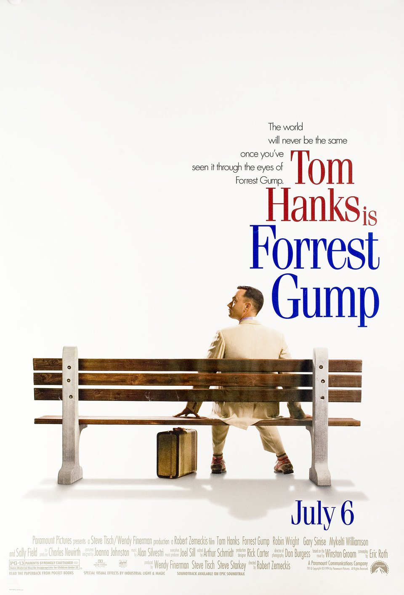

My favorite Movie
Avengers: Endgame and Forrest Gump
Avengers: Endgame
I'm a fan of superheroes, so I am really fascinated with the superhero movie series. In my opinion, Avengers: Endgame is one of the greatest superhero movies ever. I really enjoy the way director depicted the timeline and the whole story--Superheroes are never alone and they would try their best to save the lives of the mankind. The slogan really shows this spirit--"Whatever it takes". The director also gives every avenger a good ending, which makes this movie more epic and outstanding. The New York Times also made a great comment about this movie. Overall, this movie is a great ending for Marvel Studio in the 1st decade.

Image Resource: imdb

Image Resource: imdb
Forrest Gump
Forrrest Gump has won a lot of Oscars, and it is one of the top 10 movies in the movie history. I like Forrest Gump because his story and spirit inspired several generations--In the movie, he has an optimistic attitude, a strong will, and selfless. In spite of his IQ deficiency, he still makes a huge success based on his virtue. Besides, Forrest Gump is the metraphor of the "American dream" and "American spirit"--don't look upon yourself, you destiny is on your hand. In addition, everyone should enjoy the life rather than complain about it. In conclusion, you can learn a lot of Forrest Gump.The ScreenRant mentions a lot of great characterstics about Forrest Gump, which is really helpful.